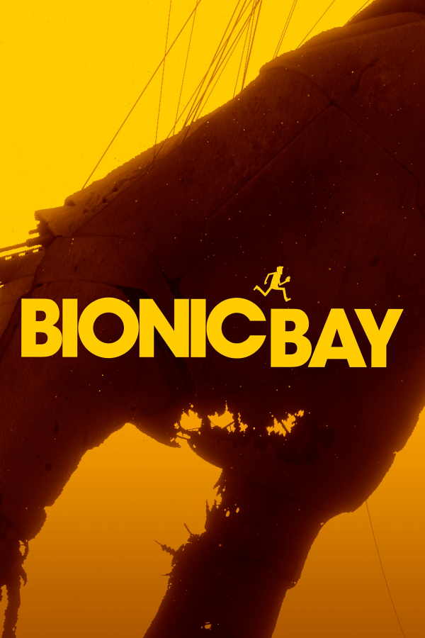

Game profile

Bionic Bay
Every archived year-end list appearance, including placement and points earned.
About the Game
An ordinary man in an extraordinary world. Bionic Bay is a new kind of a 2D platformer. It introduces a unique Swap mechanic, allowing players to interact with the physics-based world in new ways. The immersive gameplay is completed by spectacular environments and creative level design.
| Released | 2025-04-16 |
|---|---|
| Developer | Psychoflow Studio, Mureena Oy |
| Publisher | Kepler Interactive |
| Genres | Action, Adventure, Racing, Casual, Indie, Platformer |
| Platforms | PC |
SingleplayerSteam AchievementsFull controller supportSteam CloudAtmospheric2DSci-fiDifficultSteam LeaderboardsAction-AdventureDarkSpace
Where to Buy
Game information provided by RAWG.
1List appearances
1Years represented
Points by Year
32025 points
List History
| Year | Source | List | Placement | Points |
|---|---|---|---|---|
| 2025 | WayTooManyGames | Top 20 Best Games of 2025 | 13 | 3 |